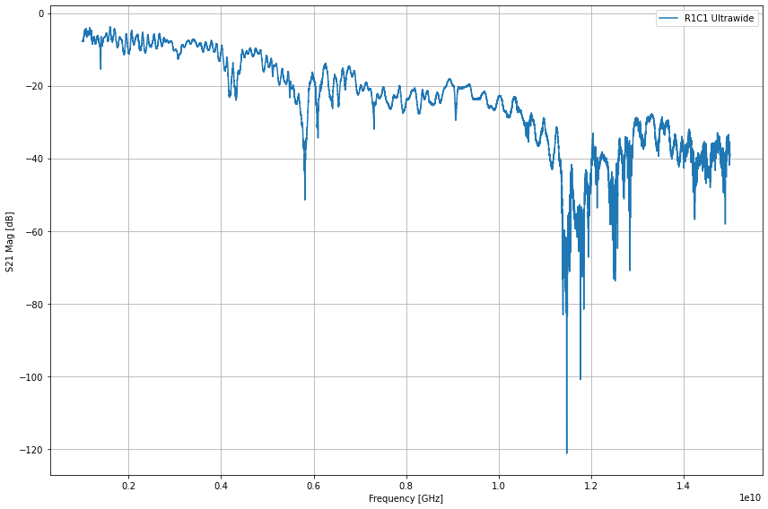
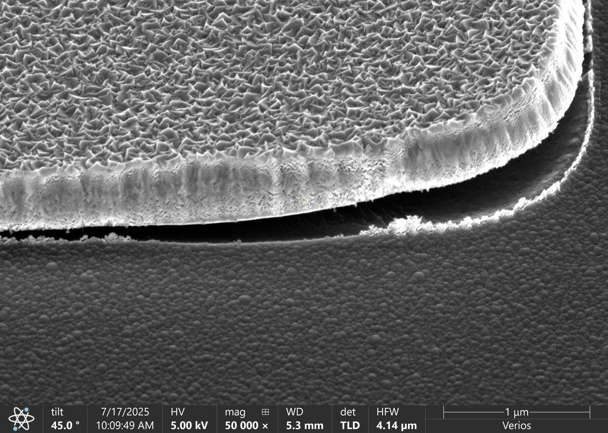
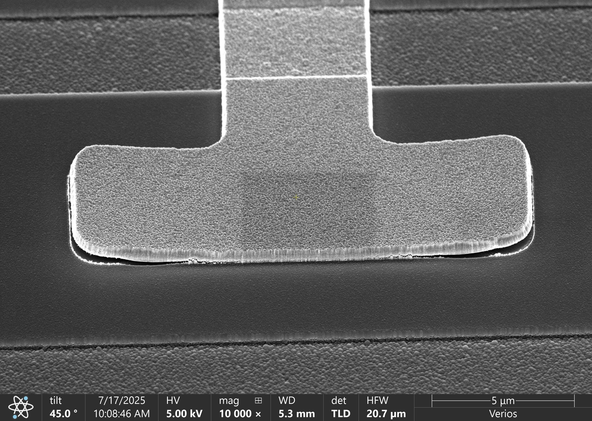
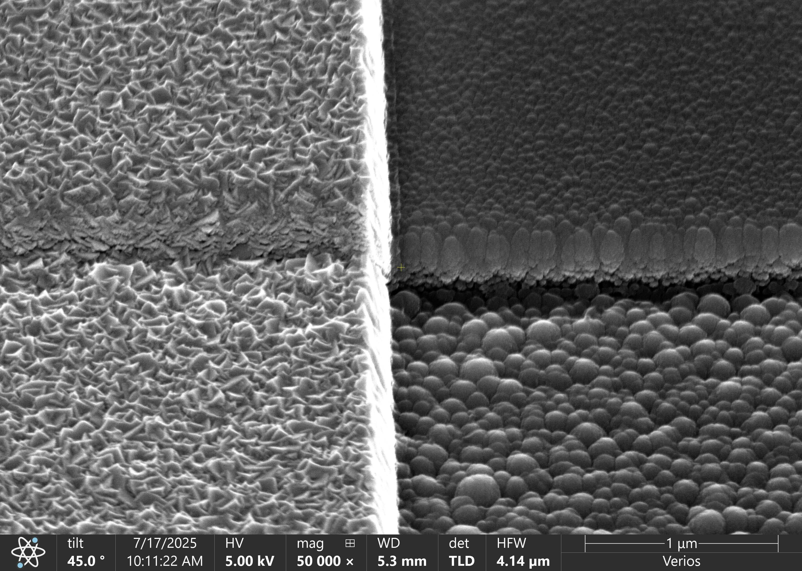

R1C1 Test Page
2025 Aug 8
— H. Athreya & J. Cornelison
Summary:
No obvious resonances found.
SEM images done by T. Cecil showed delamination of the microstrip, suspected to be cause of no resonances
Fab Info
High-Q SiC
*should probably include some info about the mask.
Wide Sweeps

Ultrawide sweep from 1 GHz to 15 GHz, no obvious resonances and smaller sweeps in this range were done to confirm that
SEM Images

Closeup of resonator delimation on SEM

Zoom out of the resonator, still showing significant delamination

Closeup of the etch